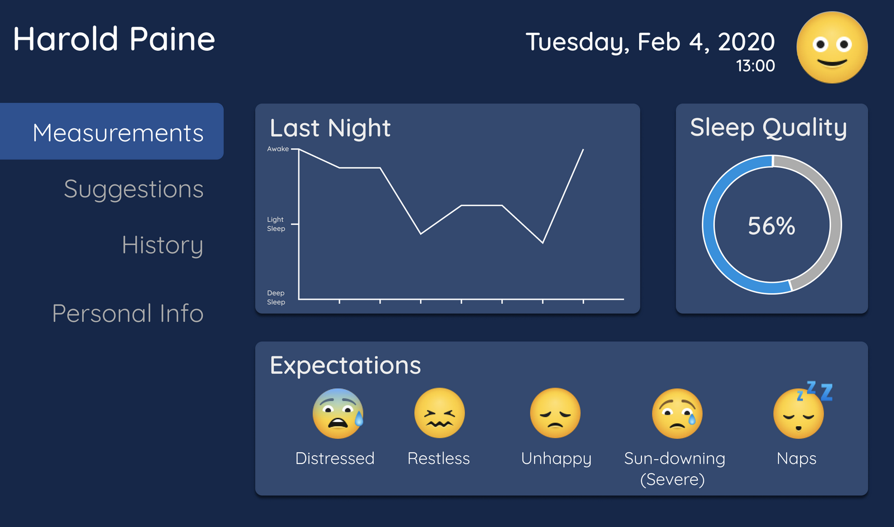
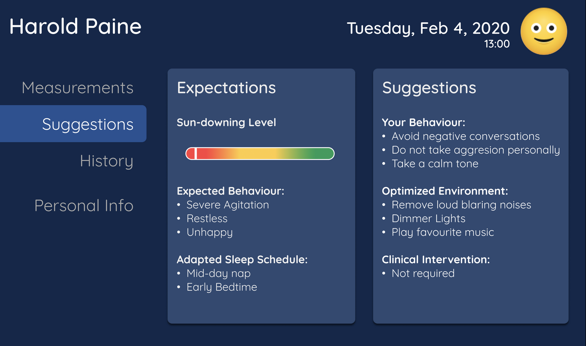
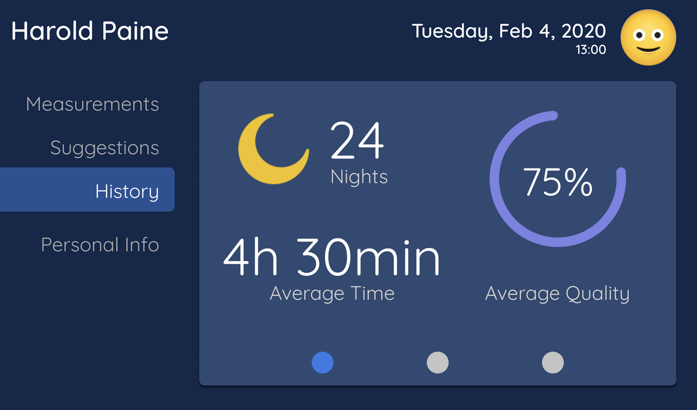
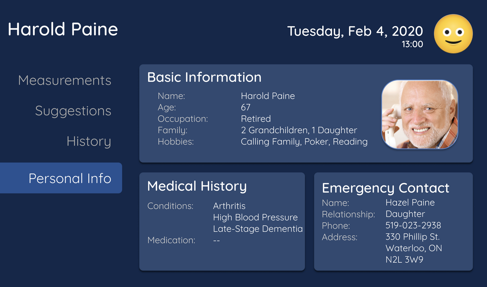

Figma was utilized to develop a prototype of the user interface. Popular interface designs were assessed, and interface design principles were implemented to achieve the design. A dark colour scheme was implemented, as this is a platform that correlates with sleep. Pagination was also utilized, to spread content across a few tabs, decreasing the amount of information that the user must take in at once.
The first screen displays the sleep pattern from the previous night, the overall quality of the sleep from the previous night, and the behaviours to expect based on the sleep quality.
The second screen displays further suggestions for the user regarding how to better care for the person with dementia. This includes the expectations for behaviour and suggestions on how to provide better care.
The third screen displays the sleep history from previous nights, including the number of nights being averaged for, the average time slept, and the average quality. This gives better insight for the caretaker into what the sleep statistics are.
The final screen displays information, medical history, and the emergency contact for the person with dementia. This page is beneficial for PSWs who may be a caretaker, who are also caring for multiple other individuals and may lose track of this form of information.